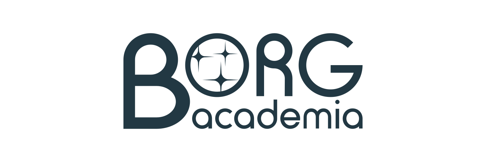

Academia (noun)
"The environment or community concerned with the pursuit of research, education, and scholarship"
Online encyclopedias have been appropriated by political agendas and have shifted from fact to propaganda.
We are responding by building a new online encyclopedia that melds old and new research technologies.
Writing styles and formats have been dominated by closed-source, copy-righted projects that require licensing and purchase for institutions to utilize.
That is why we are developing an open-source, free-for-all writing format.
"Tune your ears to wisdom, and concentrate on understanding." Proverbs 2:2 NLT
Our mission of pursuing knowledge is rooted in our Christian faith and we will stand for our faith and for Truth.